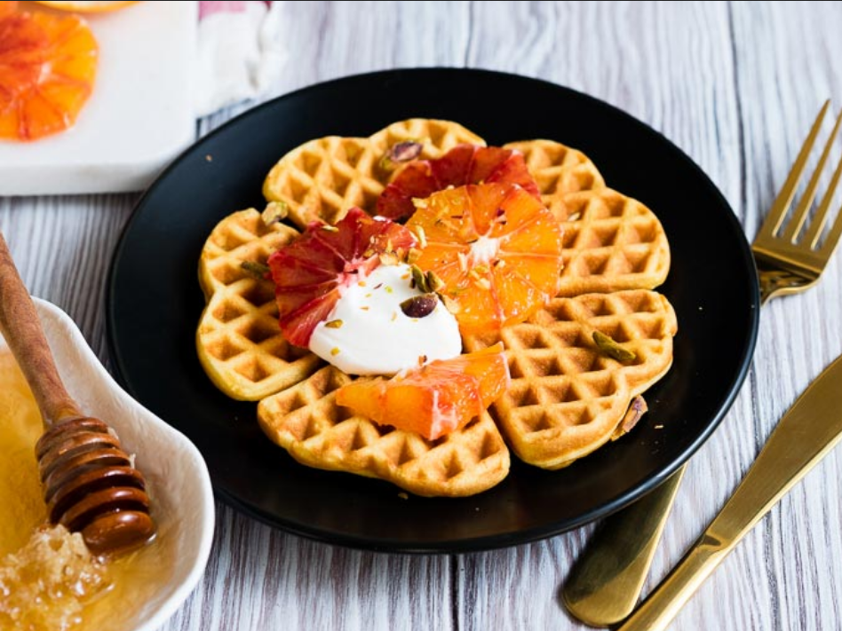

Norwegian waffles

Norwegian heart shaped waffles are definitely a special treat. They are deliciously eggy, with a hint sweetness and vanilla flavor.
Ingredients
- 1 large egg
- 175 ml whole milk
- 60 g Greek yogurt
- 1/2 teaspoon quality vanilla extract
- 160 g all purpose flour
- 60 g granulated sugar
- 1/2 teaspoon baking powder
- 1/2 teaspoon baking soda
- pinch sea salt
- 55 grams unsalted butter - melted
- unsalted butter - additional (about 1 tablespoon), for the waffle iron
For the toppings
- Greek yogurt
- blood orange slices
- honey
- chopped pistachios
Steps to make it
- In a medium bowl, beat the egg. Beat in the milk, yogurt and vanilla. Set aside.
- In a separate medium bowl, whisk together the flour, sugar, baking powder, baking soda, and salt.
- Make a well in the dry ingredients, and slowly pour in the wet ingredients while whisking it so it just comes together. Pour in the melted butter. Whisk everything together until it is smooth, being careful not to over mix. Allow to sit for 10 minutes.
- In the meantime, heat up your waffle iron. When you are ready, make sure your waffle iron is fully hot. Lightly brush the bottom and top with melted butter. Gently scoop on the waffle batter, so it just covers the surface of the waffle iron. For my waffle iron, it about 1/4 cup of batter per waffle.
- Close the lid and hold it down for about 30 seconds (I find this helps the waffle batter spread evenly). Cook each waffle for several minutes. Repeat until all the batter is used.
- Serve immediately. The waffles will go soggy if you wait to eat them. Still delicious, but not as amazing.
For the toppings
- If you would like to prepare it with the toppings as pictured, cut and slice the oranges while the waffle batter is resting. You will need about 1/3 orange for each waffle
- Top each waffle with a generous spoonful of Greek yogurt. Top with the orange slices. Sprinkle with chopped pistachios. Drizzle honey over it all. Enjoy!